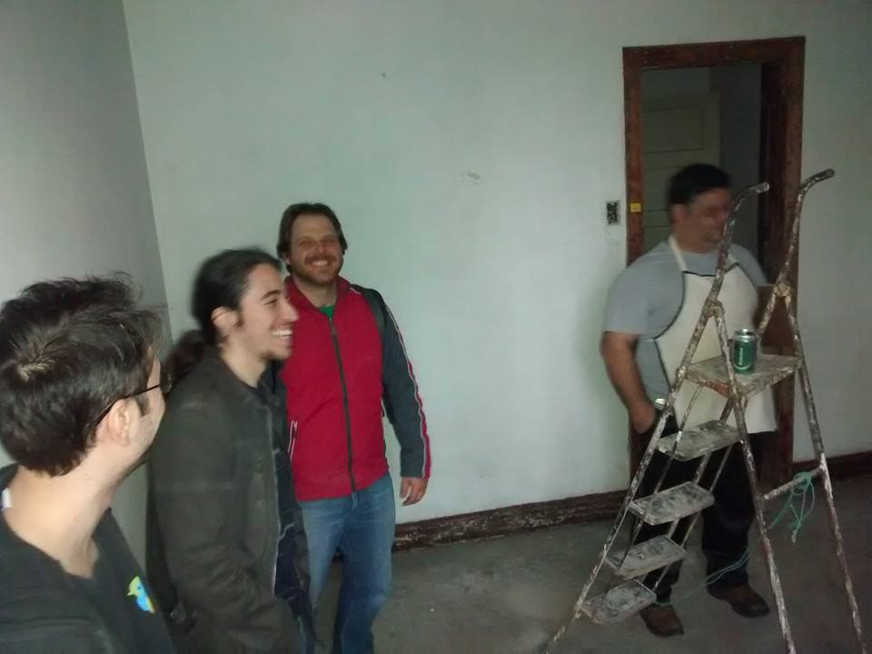
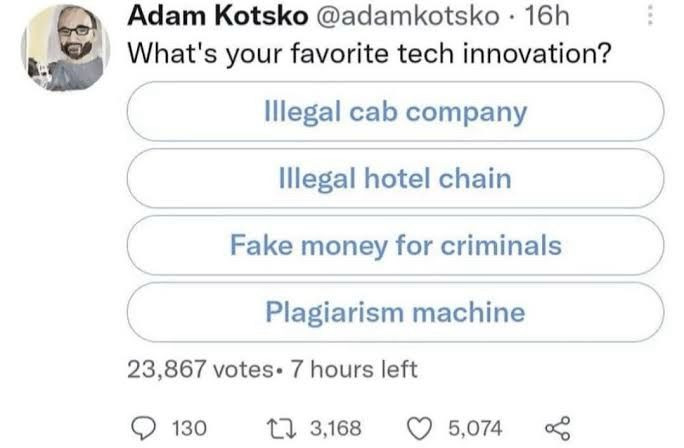

Não estamos no cibersespaço. Estamos no Brasil.
Só pra deixar claro, nós vamos gravar essa palestra. Se você for aparecer, falar ou qualquer coisa, por favor esteja ciente que precisa dar a sua permissão de uso de imagem e/ou nos peça pra te cortar da gravação.
Introdução
- Fala camaradinhas, o meu nome é Lucas Zawacki e eu sou um cientista da computação, programador, músico e militante
- Mas provavelmente muitos me conhecem por causa do canal TeClas
- Mas o que a gente fala no canal? Tecnologia + Política DE CLASSES
- Ou pra deixar mais explícito: o comunista da tecnologia
Mas como a gente chegou aqui?
-
Eu acho que essa é uma pergunta interessante... porque todo eu ouço:
- O cara é comunista kkkkk?
- Você não ia ter computador no comunismo kkkkk
- É comunista e usa youtube kkkkkk ???
- Comunista e está ganhando dinheiro kkkkkk
-
Eu sempre fui uma pessoa muito incomodada com a maneira como o mundo é e naturalmente, eu queria fazer alguma coisa...
-
Nesses meus 34 anos de vida eu já:
- Me formei na faculdade
- Fundei um hackerspace
- Ajudei a organizar diversos eventos de tecnologia, software livre, culturais, hackthons e etc...
- Integro o coletivo Soberana desde 2021

-
Eu eu já tento criar conteúdo pra internet a uns 15 anos provavelmente ... mas hoje aqui estou
-
E eu sinto que a minha evolução política foi uma jornada um pouco demorada e dolorosa (pra mim)
-
Hoje o trabalho que eu faço na militância é uma continuação direta dessa evolução política.
- Eu queria: politizar a área de TI
- Eu tenho conseguido: trazer pessoas politizadas pra área de TI
-
E por quê? Por que primariamente o canal faz uma crítica ao capitalismo
E o que é o capitalismo?
-
É a nossa maneira de viver, a maneira de produzir tudo que temos acesso
-
E a tecnologia deixa isso bem claro:

- Enshitification
- Industria de jogos, jogos mobile
- Vigilância
- Centralização da Internet
- Big Techs + Fascismo
- Mas até aí, isso é anticapitalismo. A gente que é da tecnologia temos alguns caminhos pra extravazar essa revolta que a gente sente. E geralmente a gente não vira comunista... vamos falar sobre
Os movimentos são...
- Um movimento que sempre me fascinou foi o software livre
- E a evolução do movimento aqui no Brasil é fascinante e eu considero que vi ele crescer, florescer e "morrer" durante a minha vida de militância nele
-
E hoje o movimento do software livre tem que lidar com um problemão, que sempre existiu: "financiamento"
-
Outra coisa que me atraiu muito num momento foi Cypherpunk e não só ele, também outras drogas mais pesadas
- Timothy C. May imaginou um mundo muito louco por causa da criptoanarquia que seria inevitável
- Phil Zimmermann criou o PGP e foi perseguido pelo governo dos EUA por disseminar a criptografia
- Julian Assange foi a face do Wikileaks e apostou que a livre disseminação da informação seria uma força positiva de mudança do mundo
-
E como eu citei na descrição da palestra Hal Finney foi um grande desenvolvedor cypherpunk, primeiro usuário de Bitcoin
-
Então, embora eu acredite que é inevitável que a sociedade toda seja revolucionada pela tecnologia, que todas as normas e maneiras de produzir se desmanchem no ar... tudo muda pra ficar igual
-
E tem essa divisão que é muito comum na comunidade técnica, do técnico X político. Uma coisa que sempre me fascinou e incomodou:
- "Cypherpunks write code"
- "Code as law"
- "Trust numbers, not people"
-
Mas nós realmente confiamos em números e não nas pessoas?
- 1990 e a Ideologia Californiana
- Fetichismo da Tecnologia
- E o Hal Finney deu a letra:
>In cyberspace, the default condition is that there is no interaction. >Communication requires agreement by both parties. During this >agreement, the laws (contracts, whatever) that the two parties >follow can be communicated by each party to the other, and if >party A does not feel that party B's laws provide him with >enough protection from B, he can refuse contact until B agrees >(at least for the duration of the communication) to more >constraining laws. The cost of such a transaction will likely >be negligible in cyberspace.
The problem I have with this is that there is no such place as cyberspace. I am not in cyberspace now; I am in California. I am governed by the laws of California and the United States even though I am communicating with another person, whether by postal mail or electronic mail, by telephone or TCP/IP connection. What does it mean to speak of a govern- ment in cyberspace? It is the government in physical space I fear. Its agents carry physical guns which shoot real bullets. Until I am able to live in my computer and eat electrons, I don't see the relevance of cyberspace.
E daí a gente volta atrás...
-
Hoje todo mundo usa software livre? Por que não?
-
Como a criptoanarquia reduziu o poder 'do estado'? Como as big techs se relacionam com o estado? Aonde estão os cypherpunks?
-
Então pra mim é natural que se você tem um cérebro que sente empatia você vira anticapitalista, mas até aí vários movimentos são anticapitalistas e isso não necessariamente gera uma mudança no mundo
-
Anticapitalismo não é pra ser um estilo de vida, uma escolha, da mesma maneira que depois que a gente descobre que tem um câncer a gente não escolhe fingir que NÃO ESTÁ com câncer
-
Mas no capitalismo a gente sente uma grande alienação, a gente tem nossas identidades que falam apenas entre si
-
Então acaba sendo mais fácil e cômodo a gente "se esforçar" para trabalhar no que a gente quer, no que a gente é 'bom'
::: success Eu vou fazer um software que resolve X problema!
:::
-
Por exemplo, como Mark Fischer nos pergunta: e se a gente fizesse um protesto que todo mundo quisesse participar?
::: error E se eu criasse um software que resolvesse o capitalismo?
:::
-
Aí eu trago de volta o comunismo. A gente não é comunista porque a gente sabe que o mundo está com câncer e quer se sentir superior aos outros. A missão do comunista é mudar o mundo
-
Então a resposta pra pergunta do Mark Fischer, que eu remixei um pouco. O que iríamos fazer? Fazer de tudo pra superar o capitalismo
Mas o que fazer?
- Por que sabe quando as pessoas dizem assim:
- Vocês são muito radicais, não é melhor pegar o que existe de bom no capitalismo e no socialismo e criar uma coisa nova?
- Parabéns camaradas, vocês escreveram o manifesto comunista
-
O comunismo/socialismo/marxismo é isso: uma crítica do capitalismo e PRÁTICA PARA SUPERÁ-LO
-
Então sabe aquela discussão entre estudar VS botar em prática? Na realidade é os dois, reptidas vezes... a práxis tava aqui o tempo todo, só você não viu.
-
E por incrível que pareça eu aprendo isso de novo e de novo, todo dia fazendo militância com meus camaradas da Soberana e criando conteúdo no canal.
-
Mas, como chegar la? Sabe aquele LENINISMO que a gente fica repetindo pra vocês? É que o homi era brabo e ele escreveu uma coisinha chamada 'Que Fazer?' já faz um tempo
Ouça na audioteca crítica: https://audioteca-critica.vercel.app/
-
E esse livro não é um guia, ele é o exercício diário de PRÁXIS que a gente precisa para trabalhar em agitação e propaganda, na profissionalização do nosso trabalho e da nossa comunicação revolucionária
-
Quanto mais a gente milita, conversa com as pessoas, toca tarefas e estuda, mais fica claro que a gente precisa escrever o nosso 'Que Fazer?'
-
E é por isso camaradinhas que eu sou comunista e marxista leninista.
-
Por que eu quero escrever código, eu quero construir software e tudo mais. Porém o que a gente quer acima de tudo é MUDAR O MUNDO e o mundo roda o nosso código e não o contrário
É por que nós estamos no Brasil e não no ciberespaço
Vlw 🙂